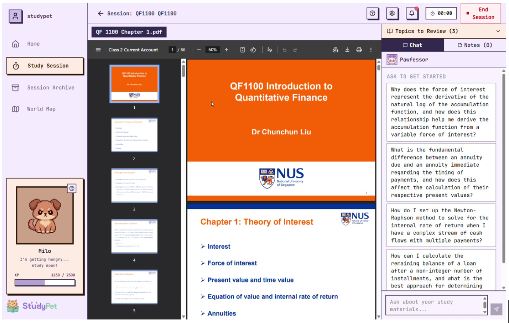

- Maintained and enhanced the NUSSU website by implementing content and UI updates for student-facing pages.
- Shipped website updates and eDM assets with the Tech Lead for time-sensitive communication campaigns.
- Built and updated reusable page components with the Publications Platform Branch to support consistent digital communications.
Computer Science Student
Hi, I'm Vicky.
I'm a Computer Science student at NUS interested in frontend development, full-stack web applications, and AI tools. I enjoy turning ideas into reliable software and aspire to build technology that makes everyday tasks simpler and more accessible for people.
2025-2029
Bachelor of Computing in Computer Science at NUS
Full Stack
React, TypeScript, Go, FastAPI, PostgreSQL, Supabase
AI Product
Retrieval-based study workflows with Gemini API and Cognee
Resume
Experience
- Contributed to the PPIS website revamp by building the Committee page frontend using React and shadcn/ui.
- Implemented reusable UI components and responsive layouts to support consistent styling and maintainability.
- Collaborated with the team on frontend integration and page updates for the revamped website.
- Lead programme planning for Computing Day 2026, designing station activities and participant flow for an event targeting 1,000+ attendees.
- Coordinate logistics, manpower allocation, and vendor arrangements for large student events, including LifeHack 2026 with 300+ expected participants.
- Manage operational planning across event activities to support smooth execution and participant experience.
- Tutored 20 middle school students of diverse abilities with interactive lessons and personalized learning plans.
- Improved engagement, understanding, and academic performance through targeted support.
Selected Work
Projects
July 2026
StudyPet
AI-Powered Study Companion · Orbital - Apollo 11
Full-stack gamified study app that turns uploaded PDF, DOCX, and PPTX materials into summaries, quizzes, and grounded chatbot responses.
- Built with React, TypeScript, FastAPI, Supabase, Cognee, and Gemini API.
- Deployed frontend on Vercel and backend on Google Cloud Run.
- Designed a world-map break mini-game with server-side barter logic and persistent cooldowns.

Jan 2026
Threadly
Web Forum
Full-stack discussion forum with authentication, topic-based threads, comments, voting, search, sorting, and profile statistics.
- Designed PostgreSQL tables for users, posts, comments, topics, votes, and comment votes.
- Implemented RESTful APIs in Go for core forum workflows.
- Integrated frontend and backend flows for authenticated browsing, posting, and voting.
2025
Portfolio Website
Personal Web Presence
Responsive portfolio website presenting projects, experience, and technical profile in a clean single-page format.
View repositoryToolkit
Skills
React
TypeScript
JavaScript
HTML
CSS
Python
FastAPI
Go
PostgreSQL
Supabase
shadcn/ui
Gemini API
Education
National University of Singapore
Bachelor of Computing in Computer Science, 2025-2029
Sutomo 1 High School Medan
High School Diploma in Mathematics and Natural Sciences, GPA 97.37/100
Indonesian: Native
English: IELTS 8.0
Chinese: HSK 6, TOCFL C1